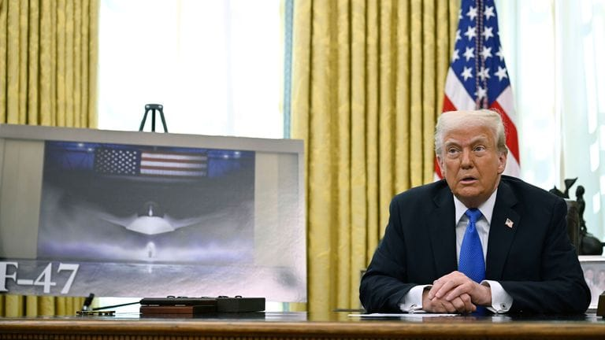

世界苦茶03月22日新闻 | 36条 | 中美贸易已经受到影响

中美贸易已经受到影响 | 特朗普小儿子，卡尔森密谋推翻泽连斯基 | 美国联邦法官阻止DOGE获得社保信息 | 波音获得F-47六代机合同
苦茶数据
美元兑人民币：7.25（昨日7.25，前日7.23）
美元兑日元：149.33（昨日149.05，前日148.32）
上证指数：休市（昨日3364，前日3408）
标普500指数：休市（昨日5667，前日5662）
比特币：84314（昨日84518，前日85759）
布伦特原油：72.16（昨日72.25，前日71.22）
中国新闻
• 中国出台人脸识别应用安全新规，严禁私密场所部署设备 ：中国官方发布人脸识别技术应用安全管理办法，明确不得在公共私密空间安装人脸识别设备。据中国国家互联网信息办公室星期五在微信公众号“网信中国”发布的消息，中国网信办、公安部联合公布《人脸识别技术应用安全管理办法》（简称《办法》），自2025年6月1日起施行。根据《办法》，应用人脸识别技术处理人脸信息活动，应遵守法律法规，尊重社会公德和伦理，遵守商业道德和职业道德，履行个人信息保护义务，承担社会责任，不得危害国家安全、损害公共利益、侵害个人合法权益。
• 中国冰川60年减少26%，气候变暖影响显著 ：随着全球气候快速变暖，中国过去60年的冰川面积减少约26%。据澎湃新闻报道，中国科学院西北生态环境资源研究院星期五发布中国第三次冰川编目数据集。根据第三次中国冰川编目，2020年前后中国最新冰川面积约为4.6万平方千米，冰川总条数约为6.9万条。
• 美国制裁中国炼油厂及其CEO，指其购买伊朗原油 ：在美国总统特朗普要求伊朗就限制其核计划达成新协议之际，华盛顿加大了对德黑兰石油业的制裁，最新打击对象是中国一家民营炼油厂及其首席执行官。彭博社引述美国财政部星期四发布的声明称，这家“茶壶炼油厂”购买了数百万桶伊朗原油，价值约5亿美元。声明说，该厂也接收了与胡塞武装有关而受制裁油轮运送的伊朗原油。茶壶炼油厂指的是规模较小的炼油厂。美国财政部说，这家炼油厂名为山东寿光鲁清石化有限公司。公司首席执行官王学清也被制裁。
• 中国大陆渔船越界东沙，台海巡署查扣小舟 ：台湾官方通报，中国大陆海警船伴随着渔船越界东沙海域，台海洋委员会海巡署舰船全程监控驱离，有大陆小舟在执法过程中被查扣。台海巡署星期五在官网发布新闻稿指出，东沙海洋保育成功，渔业资源丰沛，近日却屡遭中国大陆渔民越界大肆捕捞。海巡署戍守东沙，在有限力量下坚定守护主权，历年来多次取缔大陆违法采捕。在介绍今年以来的大陆船只越界东沙海域的情况时，台海巡署称，今年2月15日，大陆渔船以船团形式出现，是历年来不寻常的现象。当时是海象不佳时期，第一时间有六艘母船，施放多达29艘小舟。
• 港府上诉失败，民主党主席罗健熙维持无罪判决 ：香港上诉庭驳回律政司上诉，维持对民主党主席罗健熙非法集结无罪原判。综合网媒“香港01”和《星岛日报》等报道，2019年11月18日，有市民发起到尖沙咀“营救”香港理工大学的示威学生，警方在围堵理大期间，逮捕包括罗健熙在内的多名声援示威学生的人士。罗健熙经审讯后被裁定非法集结罪名不成立，香港律政司之后提出上诉，理由是无论罗健熙到场是否有政治计算，他曾身处示威现场约40分钟，不理劝喻离开，法庭凭强而有力的环境证供足以裁定他罪成。 （翻评：结合此前终审法院判决，香港似乎还有最后的法治。）
• 民调显示港人对特首和政府满意度大幅下降 ：一项民调显示，香港市民对特区政府的不满意度上升16个百分点，对特首和高层官员的评分均下滑。香港中文大学亚太研究所星期四公布的民调显示，13.5%受访香港市民满意港府的表现，比上次调查下跌10.5个百分点；43.7%表示不满意，比上次调查增加16个百分点；回答“普通或一半半”的有41%，下滑5.4个百分点。对于特首李家超的整体表现评分，受访市民给了44.2分，比去年10月的50.7分下跌了6.5分。
• 韩国将对中国团客实行限时免签，推动旅游复苏 ：韩国政府计划今年第三季度向中国跟团游客实施限时免签政策，以促进境内旅游市场发展。据韩联社星期四报道，代行韩国总统职权的副总理兼企划财政部长官崔相穆当天前往庆尚北道庆州市检查亚太经合组织峰会筹备情况，并主持召开旅游领域民生经济检查会议。崔相穆表示，为推进访韩中国游客快速复苏，韩国政府下月将发布针对中国跟团游客的限时免签入境政策实行计划，争取在三季度正式实施。
• 戴安斯访华成特朗普任内首位与中高官会面议员 ：与美国总统特朗普关系密切的美国蒙大拿州共和党参议员戴安斯，将于星期六访华期间会见一名中国高级别领导人，由此成为特朗普重返白宫以来，首位与中国高官会面的美国政界人士，时逢中美两大经济体尝试推进受阻于较低级别的贸易对话。彭博社星期四报道上述消息。戴安斯上周在社交媒体上宣布了即将访华的消息；他此前不久才在白宫椭圆形办公室与特朗普会面。戴安斯表示，特朗普“很高兴我将贯彻他的‘美国优先’议程”。当前，美国的关税行动导致美中对彼此日渐沮丧，双方官员各执一词，未能就最佳前进方式达成一致。
• 西班牙首相桑切斯将访华，推动中欧关系 ：知情人士透露，西班牙首相桑切斯将于下月再度访华，与中国国家主席习近平会面。这将是桑切斯自去年9月之后，再次访问中国。彭博社星期四引述匿名知情人士报道，桑切斯此行正值欧洲联盟在美国总统特朗普掀起贸易战引发动荡后，重新思考全球贸易关系。除中国外，桑切斯也将到访越南。桑切斯去年访华适逢中欧贸易摩擦声升级时，他与其他欧盟成员国立场不同，敦促他们重新评估对中国电动车加征关税。桑切斯愿意和解的立场，为西班牙引入中国投资。
亚太印太新闻
• 台教育部建议减少两岸中小学交流，大陆委员会回应不强制禁止 ：对于台湾教育部长郑英耀建议两岸中小学教育交流能避免就避免，台湾的大陆委员会说，希望学校可以尽量地避免，但也不会一概禁止。综合台湾《联合报》和中时新闻网报道，郑英耀星期三受访时说，考虑到两岸现况，建议两岸中小学教育交流能避免就避免，并建议各县市教育局应优先与欧美和日本等先进国家交流。郑英耀提到，台湾总统赖清德上任后希望加强两岸交流，教育部立即行动，希望推动两岸学生交流，但一直没办法联络上；随着中国大陆军机舰侵扰越来越多，适度调整政策态度是有必要的。
• 柯文哲涉京华城案出庭，自称遭检方威胁认罪 ：台湾在野的民众党前主席柯文哲涉京华城弊案首度开庭，柯文哲在庭上控诉检察官抹黑、有罪推定，且还以他的随身硬碟有不雅片威胁他认罪。台北地检署去年12月侦办京华城案、柯文哲政治献金案完结，并依贪污治罪条例违背职务收受贿赂罪、图利、公益侵占、背信等罪起诉柯文哲等11人，并具体求处柯文哲总计28年半徒刑。综合台湾公视新闻网和《联合报》等报道，台北地方法院星期四首次就京华城案开庭，并首次提讯在押的柯文哲、威京集团主席沈庆京、国民党籍台北市议员应晓薇，和前台北市长办公室主任李文宗等。
• 日媒报道，台行政院聘日自卫队前高官担任顾问 ：日本媒体报道，日本自卫队前幕僚长岩崎茂获聘担任台行政院的政务顾问。日本《朝日新闻》星期五引述台湾官员消息报道，日本自卫队前统合幕僚长岩崎茂，获聘为台行政院政务顾问。日本自卫队前官员担任此职务，属实罕见。报道引述消息人士称，岩崎茂已在3月走马上任，任期一年。他就任后已与台湾行政院长卓荣泰会面。
• 韩国在野党提案弹劾代总统崔相穆，指其未任命法官 ：韩国最大在野党共同民主党等五个在野党向国会提请弹劾代行总统职权的经济副总理兼企划财政部长官崔相穆。新华社引述韩国YTN电视台的报道说，在野党星期五以崔相穆一直不任命缺位的宪法法院法官为由发起弹劾动议。去年12月底，崔相穆任命国会推荐的三名宪法法院法官中的两人，但以“朝野政党未达成协议”为由“暂缓”任命在野党推荐的马恩赫。
• 印尼火山喷发致峇厘岛七航班取消 ：由于印度尼西亚旅游岛屿弗洛雷斯岛的勒沃托比火山喷发，另一个度假胜地峇厘岛取消七个要起飞的国际航班。度假胜地峇厘岛的一名机场官员星期五说，位于峇厘岛以东的弗洛雷斯岛的勒沃托比火山喷发，黑色火山灰喷向八公里的高空，至少已有七个从峇厘岛出发的国际航班取消。高1703公尺的双峰勒沃托比火山于星期四晚间持续喷发11分09秒。此次长时间的喷发促使印尼地质机构将火山警戒级别提升至四级系统中的最高级别。
• 泰国首相将面临上任以来首个不信任动议 ：泰国反对党已定于下周对首相佩通坦提出不信任动议。反对派将专注对佩通坦个人治理经济的能力提出质疑，并称已掌握有力证据，足以动摇佩通坦政府的根基。这是佩通坦去年8月上台以来，首次面对不信任动议。据《曼谷邮报》报道，泰国下议院星期三经过两个多小时的讨论后，决定于下个星期一上午8时展开弹劾辩论。
科技新闻
• 李开复预测中国AI格局：DeepSeek、阿里与字节将胜出 ：随着深度求索横空出世颠覆现存人工智能的开发模式，中国AI专家李开复预计，中国将只有三家AI模型能在这场行业地震中胜出。李开复接受彭博电视采访时，押注DeepSeek、阿里巴巴集团和字节跳动最终将主导中国AI市场的主导地位，美国则可能将有xAI、OpenAI、谷歌和Anthropic四家领军企业。彭博社星期四发布采访内容。中国初创企业DeepSeek今年1月中旬凭借低成本高效能的AI模型R1在全球科技圈引起巨震，加速了全球AI模型的发展步伐。李开复认为，DeepSeek证明了开源框架的有效性，并鼓励更多开发者采用这一方法。
• 新研究称土壤和枯植比树木储碳更多 ：一项新研究表明，相比于树木，土壤、河流沉积物，以及枯死的植被储存了更多因人类活动排放的二氧化碳，这一发现颠覆了长期以来关于地球碳储存方式的传统认知。法新社报道，虽然近年来研究显示地球的碳储量总体呈增长趋势，但这些碳具体如何分布于陆地生态系统却不清晰。一个重要的问题是，碳储量在树木等活体植被与腐木、土壤等非活体物质间的分配比例尚不明确。这项发表在《科学》杂志的研究指出，深入理解这些碳储存形式十分重要，因为不同生态系统面临的环境威胁各不相同，其储碳能力亦有差异。为解答这一问题，国际科学家团队对1992年至2019年间全球木质植被储碳的变化进行了全面分析。
• 神舟十九号航天员将进行第三次出舱活动 ：神舟十九号航天员乘组将择机进行第三次出舱活动。据中国载人航天工程网消息，自今年1月21日完成第二次出舱活动以来，神舟十九号航天员乘组先后开展了交会对接在轨训练及全系统压力应急演练，稳步推进空间生命科学与人体研究、微重力物理和空间新技术等领域实验任务。为稳妥做好此次出舱活动，航天员乘组同时进行了站内环境监测与设备检查维护、物资清点等第三次出舱活动准备工作。
财经新闻
• 中国对美商品进口大降，贸易战影响显现 ：在美国总统特朗普开始对中国输美商品加征关税、并遭到北京反制后，中国今年1月至2月对美国棉花、汽车和一些能源产品的进口剧降。彭博社星期五分析前一天发布的数据显示，中国棉花采购同比剧降近80％。大排气量汽车的进口大跌近70％，原油和液化天然气的进口减少逾40％。所有这些商品在2月或3月都受到中国报复性关税的影响。过去六周，美中两国针锋相对、互相祭出贸易战措施，未来几个月可能还会出台更多举措，这给企业带来巨大的不确定性，并增加成本。
• 吉利汽车净利润翻倍，新能源汽车销量大涨 ：中国浙江民营汽车制造商吉利汽车最新财报显示，公司去年净利润同比增长逾两倍，超出分析师预期。综合彭博社和华尔街见闻等报道，吉利汽车星期四发布最新财报显示，公司2024年营收2402亿元人民币，同比增长34%；归母净利润166亿元，同比增长213%，高于分析师预期的146亿元。吉利汽车去年总销量达217.7万辆，同比增长32%，超额完成年初制定的200万辆目标。其中，新能源汽车销量达88.8万辆，同比大幅增长92%，占总销量的41%，进一步巩固了吉利在中国新能源汽车市场的领先地位。
• 中国将增储钴铜镍锂，应对关键矿产供应挑战 ：在能源转型需求提升和地缘政治局势升温的背景下，中国据报将在今年添加重要工业金属战略储备，以提振关键矿产供应的韧性。彭博社星期五引述匿名知情人士报道，中国政府计划采购钴、铜、镍和锂等金属。知情人士称，中国国家粮食和物资储备局已询问这些部分金属的售价，并提出采购要求。中国国家改革发展委员会本月初在全国“两会”期间作报告时提出，今年稳步推进国家储备建设，加快落实战略物资增储年度任务。
• 中国对美小包裹出口下滑，关税政策影响显现 ：美国宣布对所有中国商品征收关税后，上个月中国向美国出口的小包裹下滑。中国海关星期四公布的数据显示，2月中国输美小件包裹价值同比下降近5%；今年前两个月，中国向美国出口的小包裹总值达35亿美元，仅比2024年同期增长2.3%。美国总统特朗普今年2月初宣布对所有来自中国的商品征收关税，并不再对价值低于800美元的小额包裹实行关税豁免，但随后又暂停这项决定。
俄乌战争
• 克宫称俄军仍遵守不打击乌能源设施的命令 ：克里姆林宫说，俄罗斯总统普京已下令俄军避免打击乌克兰能源设施，并指这一命令仍然有效。法新社报道，克宫发言人佩斯科夫星期五在记者会上说：“大家都可以看到，泽连斯基及基辅政权其他代表的言辞有多不可信。”他强调：“最高统帅的命令依然有效，俄罗斯武装力量正在避免袭击能源设施。”乌克兰边境附近的一处俄能源设施在星期四晚上起火，俄乌双方互相指责对方打击设施。据悉，该设施此前曾向欧洲输送天然气。
• 由英法两国主导、旨在为乌克兰提供安全保障的“志愿者联盟”3月20日在英国伦敦附近一处军事基地召开闭门会议： 英法等31个国家的高级军事人员参会，商讨在乌部署维和部队的执行计划以及“部分停火”的具体细节。英国首相斯塔默说，虽然他并不知道俄乌能否达成和平协议，但随着“志愿者联盟”进入“行动阶段”，联盟正朝着正确的方向迈进。“志愿者联盟”将部署军队支持乌克兰，俄方若违反和平协议将面临“严重后果”。目前只有英法明确表示愿意派兵，澳大利亚、加拿大和芬兰表示愿意以某种方式参与其中。法国总统马克龙表示，巴黎将于27日举办“志愿者联盟”峰会，讨论对乌军事援助。欧洲多国领导人和乌克兰总统泽连斯基将参会。
• 普京致信金正恩，俄朝重申战略伙伴关系 ：俄罗斯联邦安全会议秘书绍伊古在平壤与朝鲜领导人金正恩举行会谈，并转交了俄罗斯总统普京的口信。综合塔斯社等俄罗斯媒体报道，绍伊古星期五传达了普京对金正恩的亲切问候，并表示普京高度重视两国首脑所达成协议的落实情况。绍伊古还重申，俄方将履行俄朝《全面战略伙伴关系条约》，称该条约完全符合两国共同利益。双方在会谈中还就美俄对话重启、乌克兰局势以及朝鲜半岛安全问题进行了深入讨论。
• 乌美矿产协议谈判继续，特朗普称即将签署 ：乌克兰外交部发言人蒂希说，乌克兰正在继续与美国就矿产协议进行谈判。路透社报道，白宫此前称，谈判已超出单纯的“经济矿产协议框架”，重点转向乌克兰与俄罗斯的和平问题。美国总统特朗普也透露，美国将很快与乌克兰签署这份矿产和自然资源协议。蒂希星期五提到，乌克兰在吉达举行的会谈中已准备好签署协议，但美方要求在华盛顿进行额外磋商。蒂希称，特朗普将这份协议视为对美国自2022年俄罗斯入侵乌克兰以来所提供援助的一种回报。
• 泽连斯基否认放弃核电控制权，愿接受美方投资 ：在与美国总统特朗普通话后，乌克兰总统泽连斯基否认会让出核电站的控制权，但表示对美国投资这些设施持开放态度。这名乌克兰领导人星期四在奥斯陆对记者说，他没有与特朗普讨论乌克兰15座核电机组的所有权问题，并表示对这些机组的控制相当于对乌克兰的“安全保障”。争议焦点是乌克兰南部扎波罗热地区最大的核电站，俄罗斯自2022年2月全面入侵乌克兰初期就予以占领，泽连斯基说，他星期三与特朗普的通话中提到这个问题。
• 据 Politico 报道，特朗普小儿子、维特科夫和卡尔森与泽连斯基的对手进行了秘密会谈： 据 Politico 3 月 18 日援引未公开的消息来源称，美国总统唐纳德·特朗普的儿子唐纳德·特朗普、新闻主持人塔克·卡尔森、特朗普的女婿贾里德·库什纳和特使史蒂夫·维特科夫与总统弗拉基米尔·泽连斯基的政治对手进行了秘密会谈。Politico 3 月 6 日报道称，随着特朗普政府对泽连斯基越来越不满，特朗普团队成员领导了与前总统彼得·波罗申科的盟友和前总理尤利娅·季莫申科的秘密会谈。据 Politico 报道，这些秘密会谈是为了让泽连斯基更加顺从并表明美国在乌克兰还有其他潜在合作伙伴的努力的一部分。 （翻评：连Tucker Calson都可以参与美国外交了，而且干的还是推翻泽连斯基这么下作的事情。美国现在真的完蛋。）
• 俄罗斯能源巨头俄气2024年亏损131亿美元： 据《莫斯科时报》3月18日报道，失去一个关键的欧洲市场给俄罗斯能源巨头俄气造成了严重的财务打击，导致2024年净亏损1.076万亿卢布。俄气平均每周亏损2.51亿美元，每天亏损3500万美元，每小时亏损140万美元。尽管该公司的总收入增长了11%，天然气收入增长了14%，但该公司年底的销售亏损仍高达1920亿卢布。该公司的财务困境因子公司俄气石油公司股价下跌和所得税率上调25%而加剧，这增加了递延所得税负债。2023年，俄气25年来首次按照国际会计准则出现净亏损，赤字达到6290亿卢布，创历史新高。
其他新闻
• 以色列首次解职情报局长，称涉卡塔尔调查利益冲突 ：以色列政府一致批准总理内坦亚胡的提议，解除国家安全总局局长罗嫩·巴尔职务。以色列总理办公室星期五凌晨发表声明说，巴尔将于新一任局长获任命时结束其任期，这一任命可能于4月10日公布。新华社引述引述《以色列时报》报道说，这是以政府历史上首次将辛贝特领导人解职。批准解职巴尔的会议持续约三个半小时。
• 美国航空事故频发冲击旅客信心，票务销售下滑 ：由于美国近期接连发生重大航空事故，乘客对飞行安全的担忧加剧，部分人取消了出行计划，导致航空票务销售下降。美国有线电视新闻网报道，达美航空首席执行长巴斯蒂安表示，今年1月美国航空一架航班在接近华盛顿国家机场时坠毁，以及上月达美航空一架航班在多伦多着陆时翻转的非致命事故，对消费者信心产生了深远影响。他指出，“这给消费者带来了极大的震动。”达美航空在其监管文件中将季度收入增长预期下调了一半，反映出事故对需求的直接冲击。
• 希思罗机场遭遇大停电，创20年来最严重运营中断 ：英国伦敦的希思罗机场因附近一场火灾导致断电，旅客出行陷入停滞，创下至少二十年来最严重的运营中断。伦敦消防局说，导致当天伦敦希思罗机场关闭的火灾已得到控制。根据伦敦消防局星期五发布的消息，火灾地点附近有约150人撤离。英国媒体报道，目前仍有4900余家住户或商铺因火灾处于断电状态。伦敦希思罗机场星期五凌晨宣布，因附近变电站发生火灾导致严重停电事故，决定关闭机场至当日23时59分。据航班跟踪网站FlightRadar24发布的数据，希思罗机场全面关闭将影响至少1351个航班。
• 马斯克将接受美军涉中战备简报，角色引发争议 ：《纽约时报》星期四引述美国官员披露，美国总统特朗普的亲密盟友、亿万富翁马斯克星期五将接受五角大楼关于应对与中国可能爆发战争的美军计划简报。特朗普星期四否认了《纽时》报道。路透社星期四指出，获悉这项严格保密的军事计划，将标志着马斯克作为特朗普顾问、并曾带头努力削减美国政府开支的角色急剧扩大。这也将引发更多有关马斯克涉及利益冲突的疑问，作为美国电动车巨头特斯拉和美国太空探索技术公司的负责人，马斯克在中国和五角大楼都有商业利益。 （翻评：后来马斯克澄清自己没有看到简报。）
• 特朗普动用紧急权力，推动美国关键矿物独立生产 ：美国总统特朗普为促进国内自然资源开发并降低对外依赖祭出新招，他准备动用紧急权力来提高生产关键矿物、甚至包括煤炭的能力。彭博社引述一名白宫官员说，特朗普星期四签署一项行政命令，要求根据《国防生产法》为国内加工关键矿物和稀土元素提供融资、贷款及其它投资支持。美国国际开发金融公司将与国防部合作，为新的矿产项目提供融资。该行政令还鼓励加速审批采矿和选矿项目，并指示内政部优先考虑在联邦土地上进行矿业生产。此举无疑是对美国及其盟友长期以来担心中国控制着一些最重要关键矿物加工的直接回应。这些矿物用于从电池到国防系统的许多对国家能源和安全至关重要的产品。
• 美国马里兰州联邦地区法院法官埃伦·霍兰德3月20日阻止政府效率部获取社会保障系统信息： 霍兰德指出，根除社保系统中存在的欺诈、浪费和管理不善，符合公众利益，但这并不意味着政府可以藐视相关法律来实现这一目标。霍兰德表示，政府效率部团队仅凭一些怀疑就在美国社会保障署的信息系统中进行“钓鱼式搜寻”。她要求该部门人员须在接受培训和接受背景调查后，访问已被删减或删除个人身份信息后的数据。一名前官员在法庭上证实，政府效率部团队敦促软件工程师快速获取即使在政府内部也受到严格限制的社保信息。团队似乎正在根据不准确和误解寻找欺诈行为。
• 波音获得美国空军 F-47 第六代战机的制造合同： 3 月 21 日，波音公司赢得了为美国空军开发下一代战机 F-47 的合同，该战机将引领未来的空战，并拯救该公司陷入困境的军事航空业务。波音和洛克希德马丁都参与了美国空军下一代空中优势系列系统的投标，合同总价值可能超过 200 亿美元。特朗普在发布仪式展示了一张海报，展示了 F-47 设计的初步效果，展示了前机身和大幅后掠的机翼，但没有进一步的设计特征。特朗普进一步透露：“该飞机的实验版已秘密飞行了近 5 年，我们相信它的能力远远超过任何其他国家。”